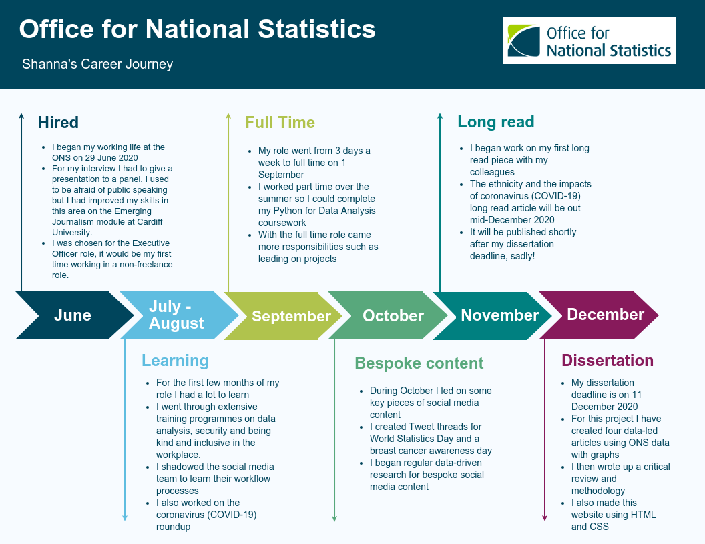

In June 2019 following completion of Semester 2 of my Computational and Data Journalism MSc I was offered a role as Data Journalist at the Office for National Statistics (ONS). I took this role mid-way through the coronavirus (COVID-19) pandemic where crucial data-driven news dominated news headlines daily, with ONS regularly being cited as a source.
Since I began my working life at the ONS, our team’s daily workload has been dominated by writing entries for the Coronavirus (COVID-19) Roundup, which summarizes the findings of the weekly COVID-19 data releases. As well as writing roundups, I have been tasked with creating bespoke content for the ONS Twitter channel. I created ‘micro data journalism’ in the form of Tweet threads including data-driven statements and graphs. These posts have included editorial content for World Statistics Day, analysis for Wear It Pink breast cancer awareness day, explainers that laid out in simple terms what the COVID-19 Infection Survey is, among other pieces of work.
For my dissertation piece I have analysed ONS data releases, some of which I have done during work time, and some in my own time. The four articles I have written look into COVID-19 data, baby name trends, the pandemic’s influence on working from home and a look back at the Census in light of the upcoming national survey in March.